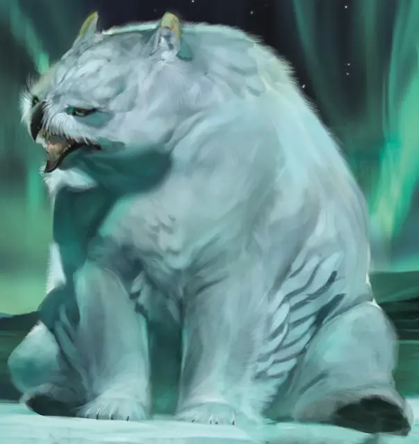

Снежный совомед
Snowy Owlbear
Большой Монстр, без мировоззрения

Класс Доспеха 13 (природный доспех)
Хиты 59 (7к10 + 21)
Скорость 40 футов, плавая 30 футов
| мод | спас | ||
|---|---|---|---|
| СИЛ | 20 | +5 | +5 |
| ЛОВ | 12 | +1 | +1 |
| ТЕЛ | 17 | +3 | +3 |
| мод | спас | ||
|---|---|---|---|
| ИНТ | 3 | −4 | −4 |
| МДР | 12 | +1 | +1 |
| ХАР | 7 | −2 | −2 |
Навыки Восприятие +3
Чувства тёмное зрение 60 футов, пассивное Восприятие 13
Опасность 3 (700 опыта)
Бонус мастерства +2
Особенности
Острое зрение и тонкий нюх. Совомед совершает с преимуществом проверки Мудрости (Восприятие), полагающиеся на зрение или нюх.
Рождённый во льдах. Совомед также адаптирован к холодным климатическим условиям.
Действия
Мультиатака. Совомед совершает две атаки: одну клювом, другую когтями.
Клюв. Рукопашная атака оружием: +7 к попаданию, досягаемость 5 футов, одна цель. Попадание: Колющий урон 10 (1к10 + 5).
Когти. Рукопашная атака оружием: +7 к попаданию, досягаемость 5 футов, одна цель. Попадание: Рубящий урон 14 (2к8 + 5).
Описание
Снежный совомед сочетает в себе особенности снежной совы и белого медведя. Когда он не спит или не впал в спячку, он ходит вразвалку по ледяной тундре в поисках пищи.